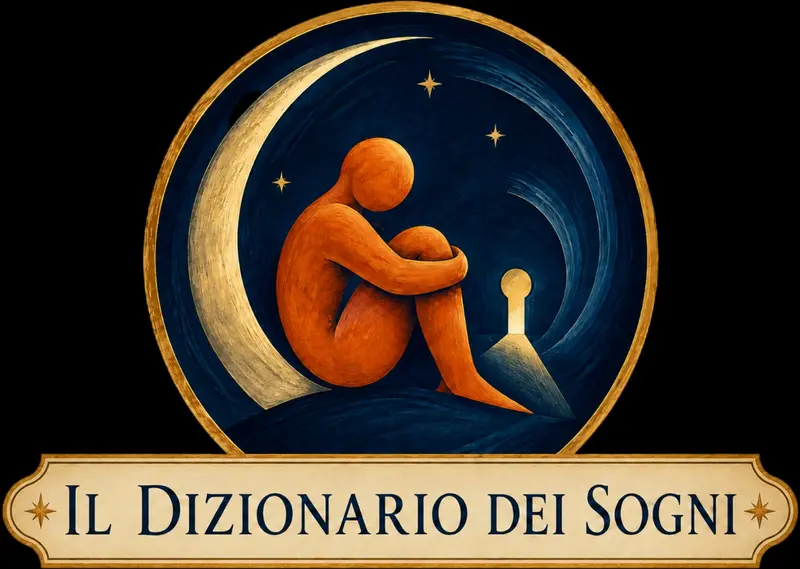
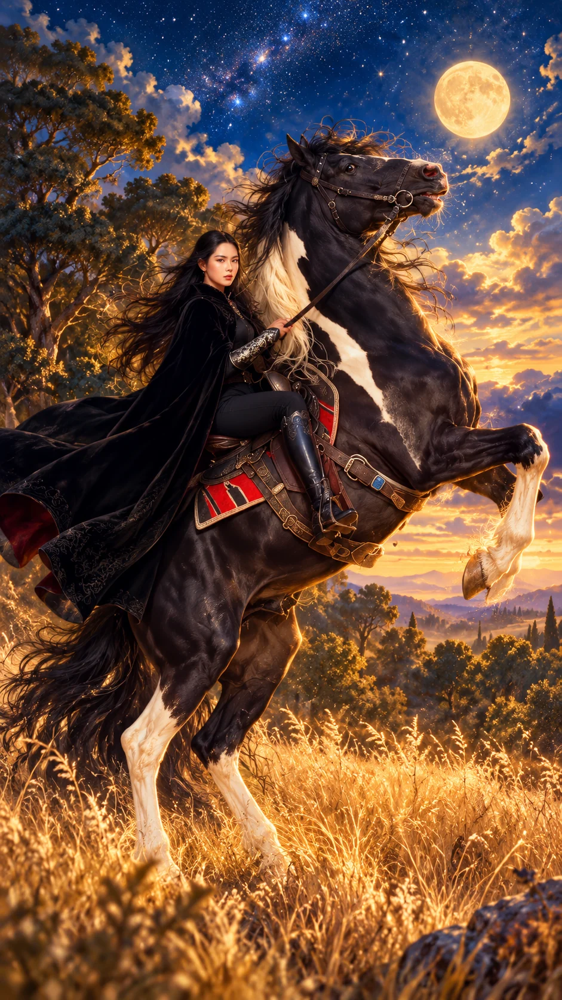
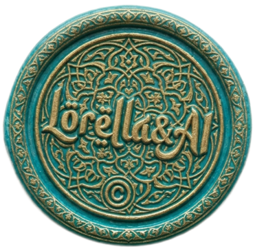

Il cavallo
È il cuore della scena: una forza viva che può evocare energia, desiderio di autonomia, movimento e istinto. Il suo significato cambia secondo ciò che proviamo: fiducia, meraviglia, paura oppure il bisogno di lasciarci trasportare.

Una collaborazione da sogno
Tavole oniriche interattive
La forza che prende il galoppo


Tocca i punti luminosi della tavola per seguirne i simboli.
È il cuore della scena: una forza viva che può evocare energia, desiderio di autonomia, movimento e istinto. Il suo significato cambia secondo ciò che proviamo: fiducia, meraviglia, paura oppure il bisogno di lasciarci trasportare.
Il cavallo si solleva e il terreno sembra allontanarsi. L’impennata può parlare di slancio, ribellione o di un’emozione che fatica a rimanere contenuta. Non è necessariamente un pericolo: conta se, nel sogno, lo abbiamo vissuto come potenza o come minaccia.
Essere in sella è un’immagine del rapporto con le nostre energie. Guidare il cavallo con sicurezza può richiamare fiducia; stringersi alla sella mentre l’animale decide la strada può rivelare il desiderio di controllo o la paura di perderlo.
Sono il sottile legame tra volontà e istinto. Stringerle troppo potrebbe evocare il tentativo di dominare ogni evento; lasciarle andare può suggerire fiducia, ma anche la sensazione che qualcosa ci sfugga.
Il tessuto si apre come un’ala e trasforma una cavalcata in un viaggio quasi mitico. Può suggerire identità, protezione o la possibilità di mostrarsi in modo nuovo quando la vita accelera.
Non dà ordini e non indica una meta precisa: illumina il paesaggio dell’incertezza. Può richiamare intuizione, immaginazione e ciò che percepiamo prima di saperlo spiegare.
Dietro il cavallo si apre una strada ancora invisibile. L’orizzonte può evocare ciò che desideriamo raggiungere, una libertà possibile oppure l’inquietudine di non sapere dove conduce il cambiamento.
È la terra da cui il cavallo si stacca, ma a cui continua ad appartenere. Ricorda che anche i sogni più vertiginosi nascono da bisogni concreti: sicurezza, appartenenza, desiderio di fare un passo.
Nel sogno il cavallo non è soltanto un animale: è un movimento che prende forma. Può evocare vitalità, istinto, libertà, desiderio di partire e la difficile intesa tra ciò che sentiamo e ciò che cerchiamo di guidare.
Ma non tutti i cavalli conducono nello stesso luogo. Uno che riposa accanto a noi racconta un’esperienza diversa da uno che fugge o che si impenna. Anche la stessa immagine può cambiare significato secondo la paura, la gioia, la fiducia o la meraviglia che abbiamo provato.
In questa tavola il cavallo si solleva sotto la luna, mentre la cavallerizza resta in sella. La domanda non è soltanto «chi comanda?», ma «come si trova un equilibrio tra forza e direzione?».
Può rappresentare l’incontro con una forza ancora da conoscere. Il suo comportamento e la distanza a cui si trova possono dire più del colore o della grandezza.
Può evocare fiducia nelle proprie capacità e la sensazione di procedere in accordo con ciò che desideriamo. Anche la direzione della cavalcata è importante.
Può riflettere una situazione che avanza più rapidamente di quanto vorremmo. Non sempre il sogno parla di incapacità: talvolta mostra la difficoltà di convivere con l’imprevisto.
Un gesto di grande energia. Può esprimere entusiasmo, ribellione o paura di perdere stabilità. La sensazione provata nel sogno aiuta a distinguere lo slancio dall’allarme.
Può richiamare indipendenza, desiderio di movimento e bisogno di spazio. Se lo guardavamo allontanarsi con tristezza, può invece evocare qualcosa che sentiamo sfuggire.
Il nero può dare al cavallo un carattere misterioso o solenne, ma non annuncia eventi negativi. Può suggerire una forza sconosciuta, un sentimento intenso o semplicemente il ricordo di un animale reale.
Il bianco può evocare luce, idealizzazione, speranza o un’immagine di bellezza. Il valore personale del colore e il comportamento dell’animale restano più importanti di un significato fisso.
I colori contrastanti possono suggerire aspetti diversi che convivono: impulso e prudenza, slancio e necessità di protezione. Il sogno non impone una scelta fra gli opposti.
Può esprimere la sensazione che un’emozione, un impegno o una novità chiedano attenzione. La paura di essere raggiunti talvolta conta più del cavallo stesso.
Può richiamare una perdita momentanea di fiducia, un imprevisto o la paura di non essere all’altezza. Rialzarsi, essere aiutati oppure restare fermi cambia la lettura della scena.
Può evocare un avvicinamento gentile a emozioni intense e la possibilità di trovare collaborazione invece di imporre il controllo.
Può invitare a riflettere sulle proprie risorse, sui limiti o su un bisogno di riposo. Non è una previsione: è un’immagine da collegare a ciò che stiamo vivendo.
Il movimento si annuncia prima della sua causa. Può suggerire attesa, urgenza o percezione di un cambiamento ancora difficile da definire.
Il movimento incontra un paesaggio emotivo. Se l’acqua è calma, il passaggio può sembrare fiducioso; se è agitata, può assumere il carattere di una prova.
Il cavallo era libero oppure portava una sella?
Ero io a guidarlo o sembrava scegliere da solo la direzione?
L’impennata mi spaventava oppure mi riempiva di meraviglia?
Ricordo il colore, la velocità, il paesaggio e soprattutto l’emozione?
Nel sogno volevo fermarmi, partire o raggiungere qualcuno?
Al risveglio sentivo stanchezza, sollievo, energia o nostalgia?
Il cavallo può portare lontano. Ma che cosa accade quando il movimento nasce da una forza che non abbiamo scelto?
Nella tavola Sognare di essere rapiti, un altro cavallo attraversa la scena: questa volta accompagna un viaggio verso l’ignoto, tra attrazione, perdita di controllo e passaggio.
Sali sul Tappeto e segui l’altro sognoTavola realizzata con intelligenza artificiale per Il Tappeto Volante · Viaggi da Sogno